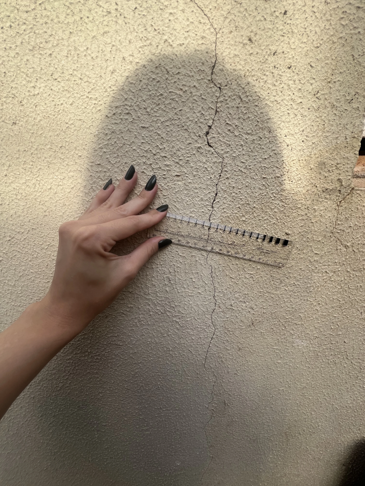

Substitua a incerteza por uma resposta técnica, documentada e defensável. Laudos de vistoria, diagnóstico de manifestações patológicas e perícias com rigor técnico e respaldo legal em todo o Mato Grosso do Sul.
Melhoria da qualidade construtiva
Processos claros e organizados
Apuração de responsabilidade técnica
Avaliação de impacto técnico e financeiro
Indicação do procedimento correto (reparo, manutenção ou correção)
Engenharia diagnóstica com método rigoroso, embasamento normativo e independência profissional.
Soluções de engenharia diagnóstica personalizadas para cada perfil de tomada de decisão.
Segurança antes de comprar, vender ou reformar. Esclarecemos se trincas e infiltrações representam riscos e fornecemos laudos defensáveis.
Consultoria preventiva durante e após a obra, auditoria documental de conformidade e blindagem técnica contra passivos futuros.
Inspeção predial preventiva, laudos de recebimento de áreas comuns e pareceres técnicos para acionar garantias de construtoras.
Assistência técnica pericial, formulação de quesitos, impugnações e laudos com alto valor probatório em processos cíveis e cautelares.
Vistorias prévias de risco e regulação técnica de sinistros em edificações, com apuração de nexo causal e responsabilidade.
Envie sua demanda para análise inicial e receba uma orientação técnica personalizada com a Eng.ª Camila.
Combinamos fundamentação normativa, investigação técnica in loco e independência profissional para entregar laudos irrefutáveis.
Análise inicial da demanda, histórico do imóvel, levantamento documental e definição precisa do escopo técnico aplicável.
Inspeção presencial com registro fotográfico de alta precisão, mapeamento de anomalias e coleta de dados físicos da edificação.
Redação fundamentada nas NBRs (incluindo NBR 14653 quando aplicável), determinação de nexo causal e parecer técnico defensável.
Entrega formal do laudo com emissão de ART junto ao CREA-MS e orientação técnica direta para subsidiar sua decisão com total segurança.
